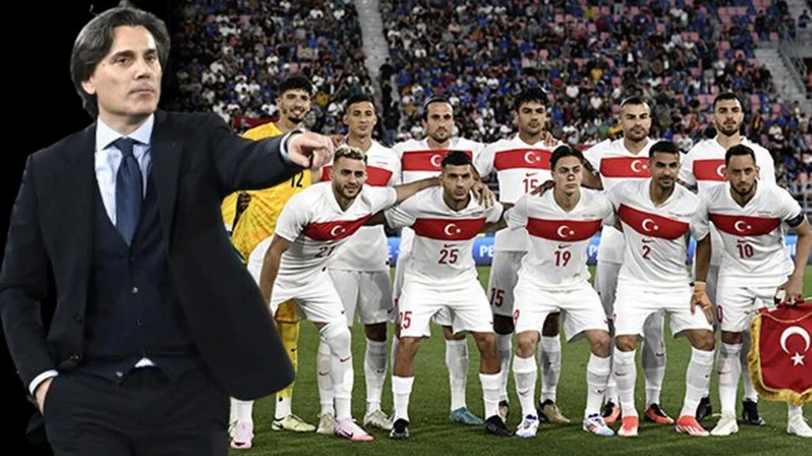
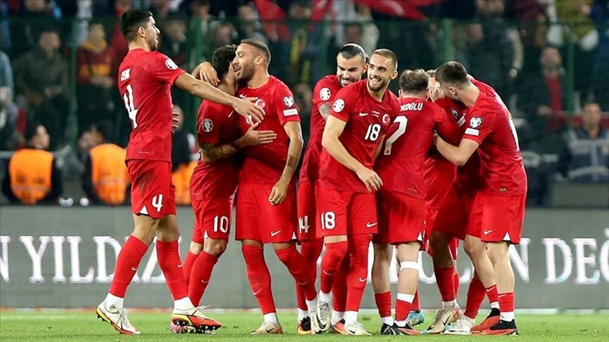

Türkiye Milli Takımı Avrupa Şampiyonası Öncesi Hazırlıklarını Tamamladı, Büyük Beklenti

Türkiye Milli Futbol Takımı, yaklaşan Avrupa Şampiyonası öncesinde hazırlık kampını başarıyla tamamladı. Teknik direktör ve oyuncular, turnuvada iddialı olduklarını ve Türkiye'yi en iyi şekilde temsil edeceklerini belirtti.

Türkiye Milli Futbol Takımı, 2024 Avrupa Şampiyonası öncesi son hazırlıklarını tamamladı. Teknik direktör ve oyuncu kadrosu, şampiyona için Almanya’ya hareket etmeden önce İstanbul’da son antrenmanlarını yaptı. Antrenmanların ardından basın toplantısı düzenleyen teknik direktör, takımın moral ve motivasyonunun en üst seviyede olduğunu vurguladı.
"Bu turnuvada en iyisini yapmak için sahaya çıkacağız. Takım olarak hem fiziksel hem de mental olarak hazırız. Herkesin bizden beklentilerinin farkındayız ve bu beklentileri karşılamak için elimizden geleni yapacağız" dedi. Takım kaptanı da, "Milli formayı taşımak büyük bir onur. Her birimiz sahada bunu göstereceğiz" şeklinde konuştu.

Milli takımın son hazırlık maçında gösterdiği performans, taraftarlar ve futbol otoriteleri tarafından olumlu karşılandı. Takımın genç yetenekleri, antrenmanlarda gösterdikleri üstün performansla dikkat çekti. Hücum hattındaki etkinlik ve savunmadaki disiplin, teknik ekibin şampiyonaya yönelik stratejisinin başarıyla uygulanabileceğini gösteriyor.
Ancak, takımda bazı kilit oyuncuların hafif sakatlıkları nedeniyle kadroda değişiklikler yapılabileceği de konuşuluyor. Teknik direktör, "Sakatlıklarla ilgili tedbirlerimizi aldık. Sahaya çıkacak 11 oyuncumuz da en iyi performansı gösterecek durumda olacak" diyerek bu konuda endişeleri giderdi. Taraftarlar, Avrupa Şampiyonası’nda Türkiye’nin başarıyla temsil edileceğinden emin ve takımın ilk maçını sabırsızlıkla bekliyor.